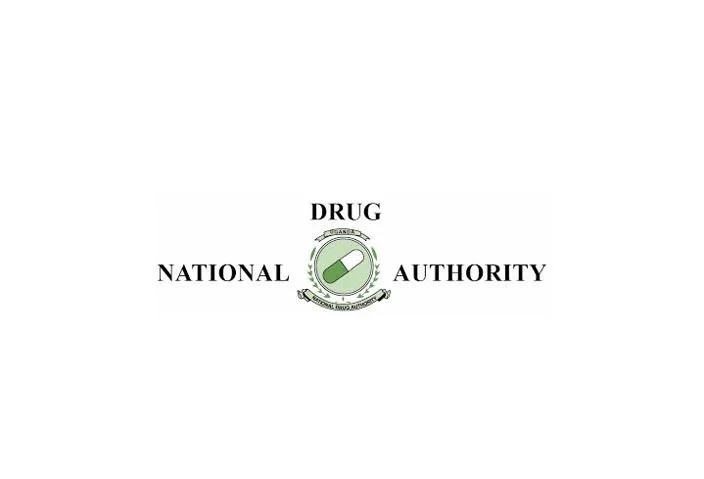

Expanded Nursing Uganda Explanation
Legal aspects and national policies should be reviewed through safe maternal and newborn assessment, early recognition of danger signs, respectful communication and timely referral. Connect the definition to vital signs, bleeding, fetal or newborn wellbeing, patient education and local protocol requirements.
01 The National Drug Authority (NDA)
The National Drug Authority (NDA) is a regulatory body comprised of individuals of high integrity, tasked with overseeing the implementation of the national drug policy .
Its core objective is to ensure the availability, quality, and safe use of pharmaceuticals across the country .
The NDA plays a big role in maintaining public health by regulating drugs, pharmacies, and ensuring that essential medications are accessible to all who need them.
02 Functions of the National Drug Authority
The NDA’s mandate covers various areas critical to pharmaceutical regulation and public health:
- Development and Regulation of Pharmacies and Drugs : The NDA formulates policies for establishing and managing pharmacies. It also ensures that the drugs sold within the country meet regulatory standards and are safe for use.
- Approving the National List of Essential Drugs : The NDA is responsible for approving the list of essential drugs that are deemed necessary for the healthcare system. They also periodically revise this list in consultation with the Minister of Health.
- Estimating Drug Needs : The NDA estimates the country’s pharmaceutical requirements to ensure that drugs are available in sufficient quantities and economically accessible to the population.
- Control of Importation, Exportation, and Sale of Pharmaceuticals : The authority regulates the flow of drugs in and out of the country, ensuring that only safe and approved pharmaceuticals enter the market.
- Quality Control of Drugs : It ensures that the drugs circulating in the market are of assured quality through stringent control measures such as inspections and laboratory testing.
- Promotion of Local Drug Production : The NDA promotes local manufacturing of essential drugs to boost self-sufficiency and reduce reliance on imported medicines.
- Encouragement of Herbal Medicine Research : It supports research and development of herbal medicines, integrating traditional medicine into the mainstream healthcare system.
- Promotion of Rational Drug Use : The NDA promotes the rational use of medicines by training healthcare professionals and providing information that ensures the appropriate prescription, dispensing, and use of drugs.
- Establishment of Professional Guidelines : The NDA creates and updates guidelines for healthcare professionals, ensuring they have the necessary information to prescribe and use drugs appropriately.
- Advisory Role : It advises the Minister of Health and other related bodies on implementing the national drug policy.
- Other Functions as Provided by Law : The NDA may take on additional roles as required by the country’s legal framework.
03 The National List of Essential Drugs
The National List of Essential Drugs contains medicines that are vital to addressing the healthcare needs of the majority of the population.
This list is reviewed periodically to ensure that it remains relevant and effective in meeting public health needs.
- The National Formulary is a document that contains the National List of Essential Drugs and other approved medicines. It serves as a guideline for healthcare professionals in prescribing medications.
04 Essential Drugs
Essential drugs are those that meet the health care needs of the majority of the population .
These drugs are selected based on disease prevalence, efficacy, safety, and cost-effectiveness.
- Availability : These drugs must be available at all times.
- Adequate Supply: There should be sufficient quantities to meet demand.
- Assured Quality: Drugs should meet stringent quality standards.
- Appropriate Dosage Forms : Available in the correct forms for administration.
- Affordability : Priced in a way that is affordable to individuals and the community.
- Disease Prevalence : Drugs are selected based on the most common diseases in the population.
- Efficacy : There must be solid evidence of the drug’s ability to treat the condition.
- Safety : The drug must have a favorable safety profile, with acceptable risk/benefit ratios.
- Cost-effectiveness : The drug must be economical for both patients and the health system.
- Scientific Data : Sufficient scientific evidence regarding the drug’s effectiveness must be available.
- Safety Monitoring : Drugs should undergo continuous safety assessments.
- Single Active Ingredient : Preferably, drugs should contain one active ingredient, unless combinations are required for compliance or synergy.
- Class Drug Name(s)
- Antimalarials Artemether, Artemether/lumefantrine, Dihydroartemisinin/piperaquine, Quinine, Primaquine
- Antiamoebics Metronidazole, Tinidazole
- Antibacterials Amoxicillin, Amoxicillin + clavulanic acid, Benzathine penicillin, Benzylpenicillin, Ceftriaxone, Cefuroxime, Flucloxacillin, Cloxacillin, Chloramphenicol, Ciprofloxacin, Cotrimoxazole, Doxycycline, Gentamicin, Erythromycin
- Antituberculosis Ethambutol, Isoniazid, Pyrazinamide, Rifampicin, Streptomycin
- Antifungal Amphotericin B, Clotrimazole, Fluconazole, Griseofulvin, Ketoconazole, Miconazole, Nystatin
- Antileprosy Clofazimine, Dapsone, Rifampicin, Thalidomide
- Antiepileptics/Anticonvulsants Carbamazepine, Clonazepam, Diazepam, Ethosuximide, Magnesium sulfate injection, Phenobarbitone, Phenytoin, Valproic acid
- Anthelmintics Mebendazole, Albendazole, Ivermectin, Praziquantel, Diethylcarbamazine
- Analgesics/Antipyretics Acetylsalicylic acid (Aspirin), Diclofenac, Paracetamol (Acetaminophen)
- Antigout Allopurinol, Colchicine, Indomethacin, Probenecid
- Opioid Analgesics Codeine, Morphine, Pethidine, Dihydrocodeine
- Antivirals Acyclovir, Ganciclovir
- Cardiovascular Atenolol, Isosorbide dinitrate, Nifedipine, Propranolol, Verapamil, Captopril, Hydralazine, Methyldopa, Lisinopril, Digoxin
- Dermatological Benzoic acid + salicylic acid, Miconazole, Clotrimazole, Benzyl peroxide, Coal tar, Dithranol, Podophyllum resin, Salicylic acid (2%, 5%), Silver nitrate pencil (40%), Betamethasone cream, Calamine lotion (15%), Hydrocortisone cream/ointment (1%), Malathion lotion (0.5%), Benzyl benzoate lotion (25%), Silver sulphadiazine cream (1%), Neomycin + bacitracin ointment, Chlorhexidine cream (5%)
- Antiulcer Cimetidine, Omeprazole, Ranitidine, Magnesium trisilicate compound
- Antiemetics Domperidone, Promethazine, Metoclopramide, Cyclizine
- Laxatives Bisacodyl, Senna
- Antidiabetics Insulin, Glibenclamide, Metformin, Tolbutamide
- Cytotoxic Drugs Asparaginase, Calcium folinate, Cyclophosphamide, Cytarabine, Dacarbazine, Dactinomycin, Fluorouracil, Doxorubicin, Hydroxyurea, Mercaptopurine, Methotrexate, Mustine, Stilboestrol, Thioguanine, Vincristine
05 Rational Use of Medicines
Rational use of medicines means that patients receive the appropriate drug for their clinical needs, in the correct dosage, for an adequate period, and at a cost that is affordable for them and the community .
06 Rational Drug Use
Rational drug use aims to optimize treatment while minimizing risks.
- Principle Description
- Right indication Prescribe only when necessary, based on a proper diagnosis
- Right drug Select the most effective, safe, and cost-efficient option
- Right dose Tailor dose to patient needs, considering individual factors
- Right duration/time Administer for the correct length of time
- Patient education Inform patients about correct use, side effects, and adherence
Right patient, Right medicine, Right dosage, Right route., Right time, Right storage., Right formulation, Right disposal, Right site, Right equipment.
07 Irrational Use of Medicines
Irrational drug use occurs when:
- Too many drugs are prescribed per patient.
- Wrong drugs are chosen for specific conditions.
- Inadequate doses are given.
- Unnecessary use of injections instead of oral medications.
- Indiscriminate use of antibiotics, such as for viral infections like the common cold or diarrhea.
- Heavy Patient Load : Overworked healthcare professionals may rush prescriptions without thorough evaluation.
- Poor Communication Skills: Inadequate interaction between healthcare providers and patients leads to misunderstandings.
- Lack of Ethics: Some health professionals may act unethically by overprescribing medications.
- Misinterpretation of Lab Results : Inaccurate interpretation of diagnostic results can lead to incorrect treatment.
- Poor Attitude towards Work : A lack of motivation may result in careless prescribing practices.
- Patient Misconceptions : Patients may insist on injections or antibiotics due to false beliefs about their efficacy.
- Inconsistent Drug Supply : Unpredictable availability of medications may force healthcare providers to prescribe alternatives.
- Lack of Medicine Formulary: Absence of a formal guide for medication use can lead to inconsistent prescribing.
- Misleading Promotions : Drug companies may advertise their products in ways that mislead both patients and providers.
- Inadequate Regulation : Insufficient oversight can allow for substandard or unnecessary drugs to enter the market.
- Antibiotic Resistance: Overuse of antibiotics contributes to the development of resistant bacteria, making infections harder to treat.
- Resource Wastage : Irrational drug use wastes valuable healthcare resources.
- Increased Costs : Patients bear higher financial burdens due to unnecessary or inappropriate prescriptions.
- Adverse Drug Reactions : Polypharmacy (the use of multiple drugs) increases the risk of harmful interactions and side effects.
- Loss of Patient Confidence : Inconsistent or ineffective treatment can erode trust in the healthcare system.
- Poor Health Outcomes : Patients are more likely to experience complications, delays in recovery, or even worsening of their conditions.
08 Nursing Uganda Clinical Lens
Use Legal aspects and national policies as a practical nursing topic, not only a memorized definition. Read the topic through the safety of two patients: the mother and the fetus or newborn.
- What to understand first: define legal aspects and national policies, identify the normal or expected pattern, then explain what changes when the patient is unwell.
- Why it matters in care: the nurse must recognize risk early, explain findings clearly, document accurately and know when to escalate.
- How to revise it: connect each point to assessment, nursing diagnosis or care problem, intervention, rationale and evaluation.
09 Assessment Guide
- Maternal vital signs, bleeding, pain, contractions, uterine tone and danger signs.
- Fetal or newborn wellbeing, feeding, temperature, breathing and activity.
- History of pregnancy, parity, medications, allergies, investigations and referral risks.
10 Nursing Priorities, Rationales and Outcomes
- Recognize danger signs early and escalate without delay.
- Provide respectful communication, privacy, infection prevention and clear documentation.
- Teach the mother what to monitor at home and when to return urgently.
The rationale for these priorities is patient safety: nursing actions should prevent deterioration, reduce discomfort, support recovery and create clear evidence for the next caregiver.
- Expected outcome: Mother and baby remain stable, danger signs are acted on early, and the family understands follow-up instructions.
11 Patient Teaching and Revision Check
- Explain legal aspects and national policies in simple language the patient or caregiver can repeat back.
- Teach warning signs, medicine or follow-up instructions, hygiene or lifestyle points where relevant.
- For exams, prepare a short answer using: definition, causes or risk factors, signs, assessment, management, complications and prevention.
- For ward practice, document baseline findings, actions taken, patient response and the plan for review.
Illustrations and Diagrams (1)

Related Video Lectures
Watch nursing lecture videos on YouTube for this topic. Opens in a new tab.
Watch on YouTubeExternal link: YouTube may use its own cookies and terms. Nursing Uganda is not affiliated with YouTube.